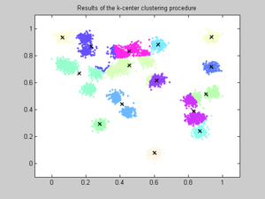
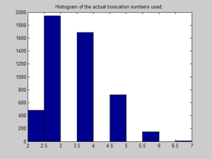

clear all;
close all;
clear functions;
clc;
disp('---------------------------------------------');
disp(sprintf('Example to demonstrate the use of Data adaptive IFGT'));
disp('---------------------------------------------');
d=2;
disp(sprintf('Dimensionality d=%d\n',d));
N=5000;
disp(sprintf('Number of source points N=%d\n',N));
M=5000;
disp(sprintf('Number of target points M=%d\n',N));
G=30;
m=rand(d,G);
v=0.02*ones(1,G);
[X]=generate_multiple_gaussians(N,G,m,v,d);
for j=1:d
shift=min(X(j,:));
X_shifted(j,:)=X(j,:)-shift;
scale=1/max(X_shifted(j,:));
X_shifted_scaled(j,:)=X_shifted(j,:)*scale;
end
X= X_shifted_scaled;
Y=rand(d,M);
q=rand(1,N);
h=sqrt(2)*0.2*sqrt(d);
disp(sprintf('Bandwidth h=%f\n',h));
epsil=1e-3;
disp(sprintf('Target error epsilon=%e\n',epsil));
Klimit=round(0.2*100/h);
disp(sprintf('Klimit=%d\n',Klimit));
disp(sprintf('Press any key to continue...\n'));
pause
disp('---------------------------------------------');
disp(sprintf('Choosing the IFGT parameters\n'));
disp('---------------------------------------------');
to=clock;
[K,p_max,r]=ImprovedFastGaussTransformChooseParameters(d,h,epsil,Klimit);
parameters_time=etime(clock,to);
disp(sprintf('Number of clusters K=%d\n',double(K)));
disp(sprintf('Maximum truncation number p_max=%d\n',double(p_max)));
disp(sprintf('Cutoff radius r=%f\n',r));
disp(sprintf('Time taken=%f secs\n',parameters_time));
disp(sprintf('Press any key to continue...\n'));
pause
disp('---------------------------------------------');
disp(sprintf('Running the k-center clustering\n'));
disp('---------------------------------------------');
to=clock;
[rx,ClusterIndex,ClusterCenter,NumPoints,ClusterRadii]=KCenterClustering(d,N,X,double(K));
clustering_time=etime(clock,to);
disp(sprintf('Maximum cluster radius=%f\n',rx));
disp(sprintf('Time taken=%f secs\n',clustering_time));
plot_clusters(N,d,X,K,ClusterIndex,ClusterCenter);
title('Results of the k-center clustering procedure');
disp(sprintf('Press any key to continue...\n'));
pause
disp('---------------------------------------------');
disp(sprintf('Updating the truncation number\n'));
disp('---------------------------------------------');
to=clock;
[p_max]=ImprovedFastGaussTransformChooseTruncationNumber(d,h,epsil,rx);
trunc_time=etime(clock,to);
disp(sprintf('Updated Maximum Truncation Number=%d\n',double(p_max)));
disp(sprintf('Time taken=%f secs\n',trunc_time));
disp(sprintf('Press any key to continue...\n'));
pause
disp('---------------------------------------------');
disp(sprintf('Running the Dataadaptive IFGT\n'));
disp('---------------------------------------------');
to=clock;
[G_IFGT,T]=ImprovedFastGaussTransform(d,N,M,X,h,q,Y,double(p_max),double(K),ClusterIndex,ClusterCenter,ClusterRadii,r,epsil);
IFGT_time=etime(clock,to);
disp(sprintf('Time taken=%f secs\n',IFGT_time));
disp(sprintf('Press any key to continue...\n'));
figure;
hist(double(T));
title('Histogram of the actual truncation numbers used.');
pause
disp('---------------------------------------------');
disp(sprintf('Running the direct method.\n'));
disp('---------------------------------------------');
to=clock;
[G_direct]=GaussTransform(d,N,M,X,h,q,Y);
GT_time=etime(clock,to);
disp(sprintf('Time taken=%f secs\n',GT_time));
disp('---------------------------------------------');
disp(sprintf('Summary\n'));
disp('---------------------------------------------');
IFGT_total_time=parameters_time+clustering_time+trunc_time+IFGT_time;
IFGT_err=max(abs((G_direct-G_IFGT)))/sum(q);
disp(sprintf('Direct computation takes %f secs\n',GT_time));
disp(sprintf('IFGT takes %f secs Speedup=%f\n',IFGT_total_time,GT_time/IFGT_total_time));
disp(sprintf('Actual error for IFGT is %e Target was %e \n',IFGT_err,epsil));
disp('---------------------------------------------');
---------------------------------------------
Example to demonstrate the use of Data adaptive IFGT
---------------------------------------------
Dimensionality d=2
Number of source points N=5000
Number of target points M=5000
Bandwidth h=0.400000
Target error epsilon=1.000000e-003
Klimit=50
Press any key to continue...
---------------------------------------------
Choosing the IFGT parameters
---------------------------------------------
Number of clusters K=15
Maximum truncation number p_max=8
Cutoff radius r=1.051304
Time taken=0.000000 secs
Press any key to continue...
---------------------------------------------
Running the k-center clustering
---------------------------------------------
Maximum cluster radius=0.199490
Time taken=0.015000 secs
Press any key to continue...
---------------------------------------------
Updating the truncation number
---------------------------------------------
Updated Maximum Truncation Number=7
Time taken=0.000000 secs
Press any key to continue...
---------------------------------------------
Running the Dataadaptive IFGT
---------------------------------------------
Time taken=0.047000 secs
Press any key to continue...
---------------------------------------------
Running the direct method.
---------------------------------------------
Time taken=2.235000 secs
---------------------------------------------
Summary
---------------------------------------------
Direct computation takes 2.235000 secs
IFGT takes 0.062000 secs Speedup=36.048387
Actual error for IFGT is 8.694839e-005 Target was 1.000000e-003
---------------------------------------------
 